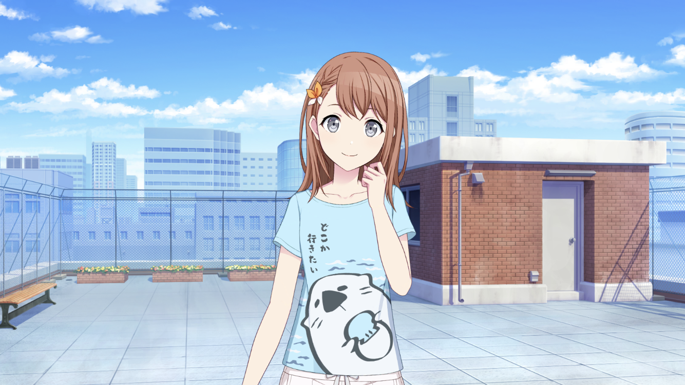
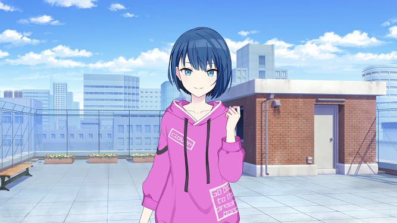
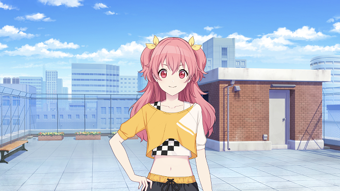
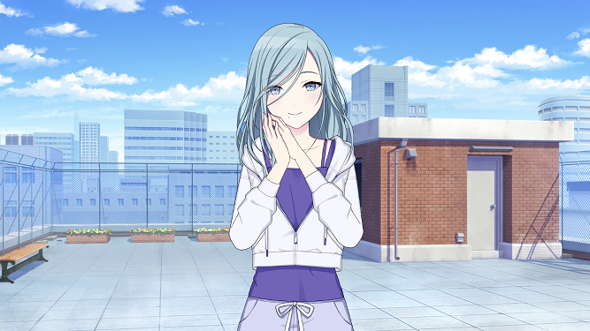
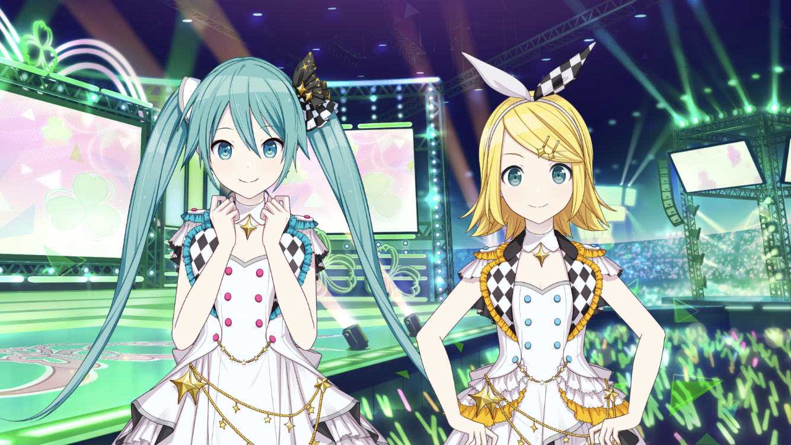
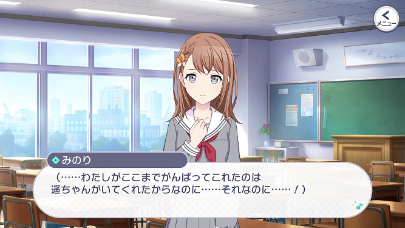
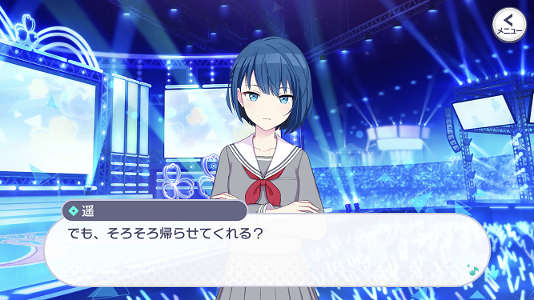
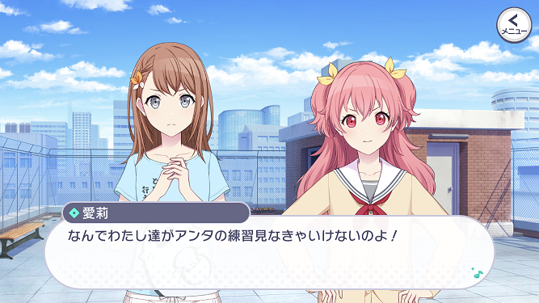
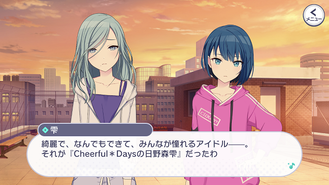
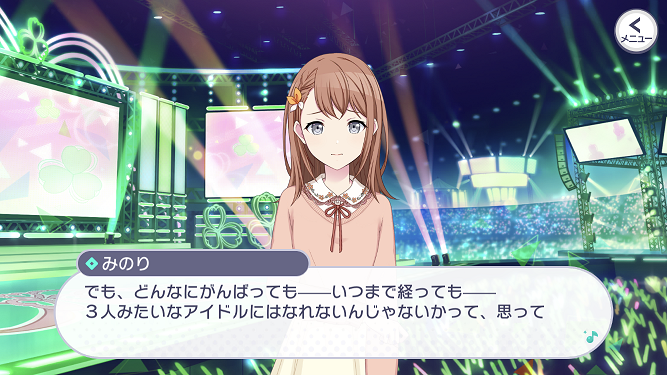

花里 みのり (はなさと みのり)
純粋でひたむきな頑張り屋。
アイドルの桐谷遥を目にしてから、アイドルを目指すようになった。
様々なオーディションを受けるが、落ち続けている。
(公式紹介文より、一部修正)
MORE MORE JUMP！
ステージのセカイ
MORE MORE JUMP！(略称: モモジャン)は、アイドルを目指す1人とアイドルを辞めた3人による異色のアイドルユニットです。


桐谷 遥 (きりたに はるか)
国民的人気アイドルグループに所属。
カリスマ的な存在で、グループ内でも絶大な人気を誇っていた。
だが、グループの解散を機に芸能界を引退し、みのりが通う学校に復学する。
(公式紹介文より、一部修正)
国民的人気アイドルグループに所属。
カリスマ的な存在で、グループ内でも絶大な人気を誇っていた。
だが、グループの解散を機に芸能界を引退し、みのりが通う学校に復学する。
(公式紹介文より、一部修正)

桃井 愛莉 (ももい あいり)
バラエティ番組などに出演し、かつて人気を博していた元アイドル。
自信家で強引な面もあるが、アイドルの仕事に愛と情熱と強い誇りを持っていた。
今では、ある事情から事務所を辞め、アイドルも引退してしまっている。
(公式紹介文より)
バラエティ番組などに出演し、かつて人気を博していた元アイドル。
自信家で強引な面もあるが、アイドルの仕事に愛と情熱と強い誇りを持っていた。
今では、ある事情から事務所を辞め、アイドルも引退してしまっている。
(公式紹介文より)

日野森 雫 (ひのもり しずく)
遥とは別の人気アイドルグループに所属している現役アイドル。
ミステリアスな大人の魅力を感じさせる容姿で、ファンを虜にしている。
しかし、グループの仲間からは妬まれることも。
愛莉とは研究生時代の同期。 (公式紹介文より、一部修正)
遥とは別の人気アイドルグループに所属している現役アイドル。
ミステリアスな大人の魅力を感じさせる容姿で、ファンを虜にしている。
しかし、グループの仲間からは妬まれることも。
愛莉とは研究生時代の同期。 (公式紹介文より、一部修正)
バーチャル・シンガー

初音ミク、鏡音リン
ミクとリンが、自らアイドルとなってステージに立ち、 みのりたちが本当の想いに気づくよう、歌って踊って、パワフルに活動している。
(公式紹介文より)
ミクとリンが、自らアイドルとなってステージに立ち、 みのりたちが本当の想いに気づくよう、歌って踊って、パワフルに活動している。
(公式紹介文より)
メインストーリーのあらすじは公式動画があるのでそちらを確認してみてください。
なお、この動画のBGMは アイドル親衛隊 です。
(公式紹介文)
アイドルを夢見るものの、オーディションには不合格続きの花里みのり。
それでも、憧れのアイドル"桐谷遥"の存在を胸に、頑張り続けていた。
ところがその桐谷遥が突如、アイドルを辞め、芸能界を引退してしまう。
なお、この動画のBGMは アイドル親衛隊 です。
(公式紹介文)
アイドルを夢見るものの、オーディションには不合格続きの花里みのり。
それでも、憧れのアイドル"桐谷遥"の存在を胸に、頑張り続けていた。
ところがその桐谷遥が突如、アイドルを辞め、芸能界を引退してしまう。
①みのりと遥の関係

みのりにとって遥は、アイドルを目指すようになったきっかけであり、常に心の支えにしていた存在でした。
その遥が突然芸能界を引退し、オーディションに落ち続けるみのりはさらに落ち込んでしまいます。
そんな中、実は同じ学校に通っていた遥がみのりの目の前に現れ、物語は一気に進みだします。
みのりはアイドルではなくなった遥にどう接するのか、さらに遥はそんなみのりとどう関わっていくのか、2人の関係に要注目です。
その遥が突然芸能界を引退し、オーディションに落ち続けるみのりはさらに落ち込んでしまいます。
そんな中、実は同じ学校に通っていた遥がみのりの目の前に現れ、物語は一気に進みだします。
みのりはアイドルではなくなった遥にどう接するのか、さらに遥はそんなみのりとどう関わっていくのか、2人の関係に要注目です。
②愛莉と雫の関係、雫のアイドル引退

愛莉と雫は研究生時代からの仲で、愛莉がアイドルを辞めてからもその関係は続いています。
お互いがお互いを認め合っている一方、雫はアイドルを辞めた愛莉のことを、愛莉は雫がメンバーと上手くいっていないことを心配していました。
その気持ちが高まったがゆえに厳しい言葉を雫にかけてしまった愛莉は、そのことを雫に謝りにいこうとします。
しかしそのタイミングで雫がアイドルを引退したという報道を目にし、愛莉の感情はぐちゃぐちゃになってしまいます。
愛莉と雫の真意は何だったのか、そして2人はきちんと仲直りをすることが出来るのでしょうか。
お互いがお互いを認め合っている一方、雫はアイドルを辞めた愛莉のことを、愛莉は雫がメンバーと上手くいっていないことを心配していました。
その気持ちが高まったがゆえに厳しい言葉を雫にかけてしまった愛莉は、そのことを雫に謝りにいこうとします。
しかしそのタイミングで雫がアイドルを引退したという報道を目にし、愛莉の感情はぐちゃぐちゃになってしまいます。
愛莉と雫の真意は何だったのか、そして2人はきちんと仲直りをすることが出来るのでしょうか。
③元アイドルが抱くステージへの想い

ステージのセカイでミクたちのライブを見た4人ですが、みのり以外の3人は不穏な表情を浮かべました。
3人はそれぞれの夢を持ってアイドルになったにもかかわらず、それぞれが何らかの思いを持ってアイドルを辞めるという選択を取っています。
遥はメンバーを守れなかった、愛莉はアイドルとしてステージに立てなかった、雫はメンバーとの仲を保てなかった。
アイドルに今も憧れるみのりは、3人が突きつけるアイドルの現実をどう受け止めるのでしょうか。 そして、ミクたちやみのりとともに、1人1人がこの過去を乗り越えられるのかがストーリーの山場になってきます。
3人はそれぞれの夢を持ってアイドルになったにもかかわらず、それぞれが何らかの思いを持ってアイドルを辞めるという選択を取っています。
遥はメンバーを守れなかった、愛莉はアイドルとしてステージに立てなかった、雫はメンバーとの仲を保てなかった。
アイドルに今も憧れるみのりは、3人が突きつけるアイドルの現実をどう受け止めるのでしょうか。 そして、ミクたちやみのりとともに、1人1人がこの過去を乗り越えられるのかがストーリーの山場になってきます。
メインストーリー後の展開
クリックして開く(※ネタバレ含む)
④雫の「イメージ」

MORE MORE JUMP！の4人は、事務所に入らずフリーのアイドルとして活動していくことになります。
すべてを自分たちの力でやらなければならない、そんな中で雫がこれまでアイドルとして作り上げてきたイメージが少しずつ崩れていきます。
かつては事務所や番組スタッフが「完璧なアイドル」としてのイメージを守ってきましたが、今の4人にその力はありません。
ファンからの「雫はこんな人じゃない」という声を、雫本人はどのように受け止めるのでしょうか。
すべてを自分たちの力でやらなければならない、そんな中で雫がこれまでアイドルとして作り上げてきたイメージが少しずつ崩れていきます。
かつては事務所や番組スタッフが「完璧なアイドル」としてのイメージを守ってきましたが、今の4人にその力はありません。
ファンからの「雫はこんな人じゃない」という声を、雫本人はどのように受け止めるのでしょうか。
⑤みのりはアイドルとして認められるのか

4人がフリーのアイドルにならざるを得なかったのも、芸能事務所がみのりという素人を認めなかったためです。
メンバーこそみのりのアイドルとしての価値を見出していますが、本人がどんなに努力しても中々ファンに認められない日々が続きます。
活動するたびに他の3人との差を実感するみのりは、自分が本当にアイドルになれるのか不安になってしまいます。
みのりが自分もファンも認めるようなアイドルになれるのか、その道筋と結果が今後のストーリーで極めて重要な要素になります。
メンバーこそみのりのアイドルとしての価値を見出していますが、本人がどんなに努力しても中々ファンに認められない日々が続きます。
活動するたびに他の3人との差を実感するみのりは、自分が本当にアイドルになれるのか不安になってしまいます。
みのりが自分もファンも認めるようなアイドルになれるのか、その道筋と結果が今後のストーリーで極めて重要な要素になります。
カバー楽曲
モモジャンのカバー楽曲は、アイドルが歌うような可愛らしい楽曲や元気をもらえる楽曲が多いです。
その一方、どこか切ない楽曲(恋愛ソング含む)もこなしてみせるのがモモジャンの強みの1つです。
また、特に3DMVでは1人1人のダンスに加えて全体の隊列も目を惹くポイントです。
カバー楽曲「メルティランドナイトメア」の3DMVでは、ミクを含む5人の一体感が特に印象に残ります。
特にサビ直前の振り付けは5人の息がぴったりと合っていて、見ていて非常に気持ちが良いです。
歌詞もある意味ではアイドルらしくないものですが、モモジャンの世界観にうまく落とし込んだステージになっています。
その一方、どこか切ない楽曲(恋愛ソング含む)もこなしてみせるのがモモジャンの強みの1つです。
また、特に3DMVでは1人1人のダンスに加えて全体の隊列も目を惹くポイントです。
カバー楽曲「メルティランドナイトメア」の3DMVでは、ミクを含む5人の一体感が特に印象に残ります。
特にサビ直前の振り付けは5人の息がぴったりと合っていて、見ていて非常に気持ちが良いです。
歌詞もある意味ではアイドルらしくないものですが、モモジャンの世界観にうまく落とし込んだステージになっています。
モモジャンの可愛らしさは2DMVでもいかんなく発揮されています。
「ハッピーシンセサイザ」はリリース当初からゲーム内で遊べた楽曲ですが、その半年後に2DMVが実装され話題を呼びました。
4人のキャラクター1人1人が丁寧に可愛らしく描かれており、楽曲そのものとモモジャンらしさのどちらもが尊重されています。
また、ところどころのソロパートも印象的ですし、2人ずつ歌っている場面では「どの2人がどんな歌詞を歌っているのか」にも注目です。
「ハッピーシンセサイザ」はリリース当初からゲーム内で遊べた楽曲ですが、その半年後に2DMVが実装され話題を呼びました。
4人のキャラクター1人1人が丁寧に可愛らしく描かれており、楽曲そのものとモモジャンらしさのどちらもが尊重されています。
また、ところどころのソロパートも印象的ですし、2人ずつ歌っている場面では「どの2人がどんな歌詞を歌っているのか」にも注目です。
書き下ろし楽曲
モモジャンの書き下ろし楽曲は、実際にアイドルがライブで歌って踊ると盛り上がるようなものが多いです。
2DMV付きの楽曲「モア！ジャンプ！モア！」にはコール＆レスポンスが多く、聞いても歌っても楽しい曲になっています。
また、作詞作曲者であるナユタン星人さんらしさ全開の2DMVがモモジャンの雰囲気とよく合っています。
彼女らの主軸である「明日の希望を届けるアイドル」を見事に実現した楽曲の1つと言える仕上がりです。
2DMV付きの楽曲「モア！ジャンプ！モア！」にはコール＆レスポンスが多く、聞いても歌っても楽しい曲になっています。
また、作詞作曲者であるナユタン星人さんらしさ全開の2DMVがモモジャンの雰囲気とよく合っています。
彼女らの主軸である「明日の希望を届けるアイドル」を見事に実現した楽曲の1つと言える仕上がりです。
3DMV付きの書き下ろし楽曲「天使のクローバー」では、一転して力強いメロディが展開されます。
第一印象はアイドルらしくないように感じるかもしれませんが、歌詞に込められた想いは実にアイドルめいているものになっています。
また、みのりによる初々しい歌と踊り、そしてアイドル経験者たちの余裕を感じさせるパフォーマンスの対比も印象的です。
先ほどのカバー楽曲と同様、この3DMVからもアイドルならではの魅力、5人で歌って踊るからこその良さを感じられます。
第一印象はアイドルらしくないように感じるかもしれませんが、歌詞に込められた想いは実にアイドルめいているものになっています。
また、みのりによる初々しい歌と踊り、そしてアイドル経験者たちの余裕を感じさせるパフォーマンスの対比も印象的です。
先ほどのカバー楽曲と同様、この3DMVからもアイドルならではの魅力、5人で歌って踊るからこその良さを感じられます。